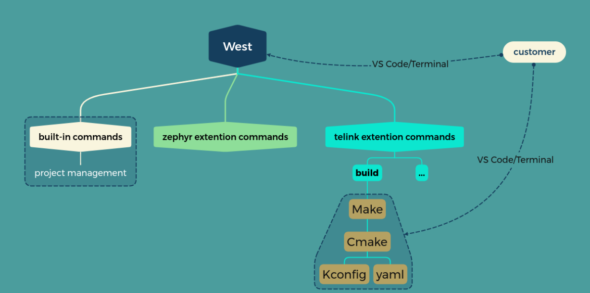

UniSDK Build System Architecture Documentation#
1. Overall Architecture Overview#
The UniSDK build system adopts a modular, extensible architecture design that integrates multiple tools such as Make, CMake, Ninja, West, and Kconfig to form a complete compilation and build workflow. The system supports multiple compilation methods, including West commands, direct CMake calls, and Make commands, providing developers with flexible build options.
1.1 Core Components#
CMake: The main build system responsible for project configuration, dependency management, and build process definition
Ninja: A high-performance build tool that executes actual compilation tasks as CMake’s backend
West: Zephyr project management tool extended in UniSDK to manage project and simplify build workflows
Kconfig: Configuration management system for handling compile-time configuration options
Make: Provides a traditional make command interface as a frontend to CMake
1.2 Directory Structure#
Build system-related files are mainly distributed in the following directories:
SDK Directory Structure (Build System)
unisdk/
├── CMakeLists.txt # Main CMake configuration file
├── Makefile # Make command interface
├── west.yml # West workspace configuration
├── Kconfig.chip # Chip Kconfig entry
├── Kconfig.build # Build Kconfig entry
├── cmake/ # CMake modules
│ ├── modules/
│ └── TelinkConfig.cmake
├── scripts/ # Build scripts
│ ├── ci/
│ ├── pinmux/
│ ├── pre_build/
│ ├── west_commands/
│ ├── kconfig.py
│ ├── menuconfig.py
│ ├── preprocess_kconfig.py
│ ├── set_telink_base.sh
│ ├── tlk_check_fw.py
│ ├── west-commands.yml
│ └── windows_setup.ps1
├── core/
├── soc/
├── boards/
└── docs/
1.3 Build System#
The UniSDK build system is a comprehensive framework that combines multiple tools to provide a seamless development experience. The following diagram illustrates the overall architecture and toolchain relationships:

The build system is designed around the following key components:
West: The command-line interface for developers, providing a unified entry point for various build operations
Make: Handles high-level build orchestration and pre-build checks
CMake: Core build system responsible for project configuration, dependency management, and build rule generation
Kconfig: Configuration management system for handling compile-time options
YAML: Configuration format used for various system configurations, including pin multiplexing
This architecture enables a flexible and modular build process, allowing developers to easily configure, build, and manage their projects while maintaining consistency across different target platforms.
2. CMake Build System#
2.1 CMake Core Process#
The CMake build system is the core of the UniSDK compilation process, responsible for project configuration, dependency resolution, and build rule generation.
2.1.1 Initialization Phase#
Entry Point: The build system supports two entry point modes:
Root Directory Entry: Uses the root directory’s
CMakeLists.txtas the entry point to build the entire SDKApplication Entry: Uses an application-level
CMakeLists.txt(typically located in thesamples/directory) as the entry point to build a specific application
Version Requirements: Sets the minimum CMake version (3.20.0)
SDK Integration: Locates and loads the Telink package configuration through
find_package(Telink REQUIRED HINTS $ENV{TELINK_BASE})Project Setup: Configures project-specific settings, including project name, supported languages, and target creation
Key Include Guards: The build system uses two important include guards to manage inclusion and prevent redundant processing:
TELINK_ROOT_INCLUDED:
Set to
TRUEin the root directory’sCMakeLists.txtUsed by
telink_default.cmaketo determine if the root directory has already been includedIf not defined,
telink_default.cmakewill include the root directory’sCMakeLists.txtIt will be removed in future versions when the application-level CMakeLists.txt is supported as the entry point.
TELINK_PACKAGE_INCLUDED:
Set to
TRUEinTelinkConfig.cmakewhen the Telink package is loadedPrevents multiple loading of the Telink package configuration
Checked in the root directory’s
CMakeLists.txtto avoid redundant package loading
Entry Point Modes Comparison:
Mode |
Entry Point |
Usage |
Output |
|---|---|---|---|
Root Directory Entry |
|
|
Builds the entire SDK as a library |
Application Entry |
|
|
Builds a specific application executable |
Application-Level Entry Point Implementation:
All applications in the samples/ directory must provide their own CMakeLists.txt file, which serves as the entry point for the build process when building a specific application. This file should:
Set the minimum CMake version
Define the project name and default language (C)
Add C sources using wildcards
Create an executable target
Conditionally add C++ support if CONFIG_TLK_ALLOW_CPP_WRAPPERS is enabled
The application-level CMakeLists.txt is automatically processed by the build system (via Make or West commands), which handles the integration with the core SDK components.
2.1.2 Module Loading Phase#
telink_default.cmake loads all necessary CMake modules in a specific order:
list(APPEND telink_cmake_modules python)
list(APPEND telink_cmake_modules extensions)
list(APPEND telink_cmake_modules west)
list(APPEND telink_cmake_modules compiler)
list(APPEND telink_cmake_modules kconfig)
list(APPEND telink_cmake_modules pinmux)
list(APPEND telink_cmake_modules linker)
Each module is responsible for the configuration and implementation of specific functionality, together forming a complete build system.
2.2 Core CMake Modules#
2.2.1 python.cmake#
This module is from the Zephyr project.
The python.cmake module is responsible for configuring and validating the Python environment required by the UniSDK build system. As the first module loaded in the build process, it ensures that all Python-dependent components have a consistent and compatible Python environment.
Key Features and Functionality:
UTF-8 Encoding Configuration
Sets
PYTHONIOENCODINGto “utf-8” on Windows systemsEnsures consistent output encoding when Python scripts are executed by CMake
Prevents encoding issues that could occur when Python isn’t connected to a terminal
Python Version Management
Defines a minimum required Python version (3.10)
Implements a robust Python executable discovery mechanism
Prioritizes using the same Python interpreter as West when available
Python Discovery Process
Checks for an existing
Python3_EXECUTABLEvariable firstFalls back to using
WEST_PYTHONif availableSearches for “python” and “python3” executables in the system path and virtual environments
Verifies discovered Python versions meet the minimum requirements
Rejects Python 2.x installations explicitly
Integration with CMake
Uses
find_package(Python3)to finalize Python configurationSets the legacy
PYTHON_EXECUTABLEvariable for compatibility with scripts expecting this variableUses
include_guard(GLOBAL)to prevent multiple inclusions
This module ensures that all Python scripts used throughout the build process (such as Kconfig processing, pinmux generation, and build utilities) have access to a compatible Python interpreter, providing a consistent build environment across different platforms.
2.2.2 compiler.cmake#
The compiler.cmake module is one of the core modules of the UniSDK build system, responsible for configuring the compiler toolchain, compiler options, and compilation flags. This module provides a complete RISC-V compiler configuration and management mechanism.
Key features include:
Compiler Environment Detection and Configuration
Automatically detects the TELINK_TOOLCHAIN_PATH environment variable setting
Supports cross-platform path handling
Verifies the existence and validity of the RISC-V GCC compiler
Provides clear error messages and configuration guidance when the compiler is not found
Toolchain Component Setup
Configures primary compilation tools: C/C++ compiler, assembler
Sets up auxiliary tools: objdump, objcopy, etc.
Uniformly configures RISC-V target architecture and processor type
Sets the system name to Generic (for bare-metal development)
Compiler Options Application Function
Provides the
telink_apply_compiler_options()function to apply compilation options to targetsAutomatically applies preprocessor macro definitions (autoconf.h, capabilities.h, pinmux.h)
Supports dynamically loading compilation options from JSON configuration files
Applies specific compilation flags based on different languages (ASM, C, C++)
This module ensures compilation consistency across different platforms for the entire project through a unified compiler configuration mechanism, while providing a flexible option configuration method to support project customization requirements.
2.2.3 linker.cmake#
The linker.cmake module is responsible for configuring the linking process in the UniSDK build system. It handles linker scripts, link options, and post-build processing commands. The following are its key functionalities:
2.2.3.1 Basic Linker Configuration#
Sets CMAKE_C_LINK_EXECUTABLE command template for RISC-V cross-compilation
Configures verbose makefile output for better build visibility
Disables RPATH to ensure no runtime path dependencies are embedded
Removes default library suffix to match embedded system requirements
2.2.3.2 Linker Options Management#
Reads linker options from the
build_settings.jsonconfiguration fileConverts JSON-defined linker options into CMake-compatible list format
Adds essential linker flags
The build_settings.json file is a central configuration file used by the UniSDK build system to store various build-related settings. It follows a JSON format and contains platform-specific configuration options, including:
{
"linker_options": [
"--gc-sections",
"--print-memory-usage"
]
"c_compile_options": [
"-O2",
"-Wall"
],
}
This file provides a flexible way to configure build settings across different platforms and projects, allowing for easy customization without modifying CMake scripts directly.
2.2.3.3 Linker Script Preprocessing#
Implements preprocessing of linker scripts using the C compiler
Supports conditional compilation in linker scripts using capabilities.h and autoconf.h macros
Creates a custom target
preprocess_linkerthat ensures the linker script is always up-to-dateAutomatically processes the base flash_boot.link script and outputs the final linker script to the build directory
2.2.3.4 Post-Build Processing#
Provides the
telink_apply_linker_options(target)function to apply linker settings to a specific targetConfigures objcopy to generate binary firmware files from ELF executables
Sets up objdump to create assembly listings for debugging and analysis
Adds size reporting to monitor memory usage of the compiled firmware
Integrates firmware validation through the tlk_check_fw.py script
2.2.4 kconfig.cmake#
Kconfig integration module is responsible for managing the entire configuration system within the CMake build process:
Configuration File Management:
Defines key configuration file paths (
.config,chip.config,build.config,autoconf.h,capabilities.h)Sets up build directory properties to ensure proper cleanup of configuration files
Manages configuration file regeneration and dependencies
Configuration Generation Flow:
Handles automatic generation of
chip.configfromKconfig.chipwhen SOC and BOARD are not definedGenerates
capabilities.husing preprocessing script based on chip configurationCreates
build.configfromKconfig.buildwith dependencies on capabilitiesMerges
chip.configandbuild.configinto the final.configfile
Preprocessor Integration:
Integrates Python scripts (
menuconfig.py,preprocess_kconfig.py,kconfig.py)Parses
.configfile to generateautoconf.hwith appropriate C definesHandles different value types (boolean, string, numeric) in configuration
Custom Targets:
parse_config: Ensures configuration parsing during buildconfig: Unified target executing the entire configuration flow in sequencegenerate_chip_config: Generateschip.configusing menuconfig or kconfig.pygenerate_capabilities: Generatescapabilities.hfrom chip configurationgenerate_build_config: Generatesbuild.configusing menuconfig or kconfig.pyupdate_dotconfig: Mergeschip.configandbuild.configinto.config
Dependency Tracking:
Sets up explicit target dependencies:
generate_chip_config→generate_capabilities→generate_build_config→update_dotconfigCreates cross-platform CMake commands for configuration file operations
Manages the configuration generation order with proper dependencies
2.2.4.1 SOC and BOARD Parameter Processing#
The kconfig.cmake module includes comprehensive SOC and BOARD parameter handling:
Parameter Detection and Processing:
# Process SOC and BOARD parameters if provided
if(DEFINED SOC)
message(STATUS "SOC parameter detected: ${SOC}")
set(SOC_CONFIG_ARG "SOC=${SOC}")
else()
set(SOC_CONFIG_ARG "")
endif()
if(DEFINED BOARD)
message(STATUS "BOARD parameter detected: ${BOARD}")
set(BOARD_CONFIG_ARG "BOARD=${BOARD}")
else()
set(BOARD_CONFIG_ARG "")
endif()
SOC/BOARD Combination Validation:
Validates SOC and BOARD combinations using dynamic Kconfig parsing
Extracts SOC and BOARD names from command-line arguments
Calls
kconfig_parser.pywith--validateoption to verify compatibilityProvides clear error messages for invalid combinations
Automatic Configuration Application:
Applies SOC and BOARD configurations using
soc_board_setter.pyscriptHandles dependency resolution automatically (BOARD dependencies trigger SOC configuration)
Supports both individual SOC/BOARD setting and combined setting
Integrates with the existing configuration generation flow
Integration Points:
Command Line: Parameters passed via
-DSOC=and-DBOARD=CMake flagsMake Integration: Makefile automatically forwards SOC and BOARD variables to CMake
West Integration: West commands can specify SOC/BOARD through command-line options
Validation: Real-time validation prevents incompatible hardware configurations
2.2.5 west.cmake#
This module is from the Zephyr project.
The west.cmake module is responsible for integrating the West build system tool with the UniSDK build infrastructure. West is the official meta-tool for Zephyr-based projects, and this module ensures proper configuration and version compatibility within the UniSDK environment.
2.2.5.1 West Installation Detection#
Checks for West installation by attempting to import the west.version module
Verifies installation status through the presence of WEST_PYTHON environment variable
Handles both installed and non-installed West scenarios gracefully
Provides clear error messages with installation instructions when West is required but not found
2.2.5.2 Python Environment Consistency#
Ensures the Python interpreter used by West matches the one used by CMake
Resolves symbolic links to identify the actual Python executable paths
Detects and reports Python interpreter mismatches between West and CMake
Adds detailed diagnostic information when Python environments are out of sync
2.2.5.3 Version Compatibility Validation#
Enforces minimum required West version (0.14.0)
Compares detected version against minimum requirements
Provides upgrade instructions when version requirements are not met
Maintains version consistency with requirements specified in scripts/requirements-base.txt
2.2.5.4 West Command Configuration#
Sets up the WEST variable as a command prefix for invoking West
Configures the WEST variable to be cached internally for IDE integration
Formats the command as
${PYTHON_EXECUTABLE} -m westto ensure proper module executionOutputs status information about the detected West version
2.2.5.5 Workspace Detection#
Determines the West workspace top-level directory using
west topdircommandConfigures the WEST_TOPDIR variable for use in other build scripts
Handles non-West projects gracefully by setting WEST to WEST-NOTFOUND
Maintains compatibility with both West-managed and custom project structures
2.2.6 pinmux.cmake#
Pin multiplexing configuration module responsible for generating and managing pin mapping configuration files for the project:
Pinmux Configuration Files
Defines the
PINMUX_Hvariable for the generated pinmux header (${CMAKE_BINARY_DIR}/pinmux.h)Defines the
DOTPINMUXvariable for the intermediate configuration file (${CMAKE_BINARY_DIR}/.pinmux)
Custom Targets
generate_dotpinmux: Generates.pinmuxconfiguration file usingscripts.pinmuxPython module with optional--skip-guiparametergenerate_pinmux_h: Converts.pinmuxtopinmux.husing thepinmux_gen.pypreprocessing scriptgenerate_pinmux: Main target that depends ongenerate_pinmux_hto ensure proper execution order
Build Target and Dependency Management
generate_dotpinmuxdepends on.configfilegenerate_pinmux_hdepends on.pinmuxfilegenerate_pinmuxdepends only ongenerate_pinmux_hto avoid duplicate executionUses
USES_TERMINALoption for real-time output during generation
Build Integration
Adds the build directory to the include path to ensure
pinmux.hcan be properly included in source filesThe main build target depends on
generate_pinmuxto ensure pin configuration is ready before compilation
Python Script Enhancements
The
scripts.pinmuxmodule now supports a--skip-guiparameter to generate default configuration without launching the interactive GUIThe
pinmux_gen.pypreprocessing script converts.pinmuxtopinmux.hduring the build processBoth scripts depend on the Python environment provided by the
python.cmakemodule
Clean Target Integration
Adds
pinmux.hand.pinmuxto the list of files cleaned by the project’s clean target
2.2.7 extensions.cmake#
The extensions.cmake module provides essential CMake utility functions that extend the core CMake functionality to support the UniSDK build system with conditional logic, source file management, and data processing capabilities.
Key Functions and Features:
Conditional Variable Management
set_ifndef(variable value [PARENT_SCOPE]): Sets a variable to the specified value only if it is not already defined. This function helps establish default values while allowing them to be overridden. The optionalPARENT_SCOPEparameter makes the variable available in the parent scope.
Conditional Source File Management
add_sources_ifdef(config src): Adds source files to the target only when a specific configuration option is enabled. This enables feature-specific code inclusion based on build configurations.add_sources(src): A simplified wrapper fortarget_sources()that adds source files to the current target (${TARGET_NAME}) without conditions.
JSON Array Processing
json_to_list(JSON_ARRAY_STRING OUTPUT_LIST [OUTPUT_STRING]): Converts a JSON array string into a CMake list. This function performs type validation to ensure the input is a valid JSON array, processes each element, and handles space-separated values within elements. It can output both a CMake list and an optional space-joined string representation.
Implementation Details
The module uses
include_guard(GLOBAL)to prevent multiple inclusionsFunctions are designed with parent scope propagation where appropriate
Error handling is implemented for invalid JSON input
This module serves as a foundational component of the build system, providing reusable functionality that simplifies conditional builds, feature toggling, and data processing within CMake scripts.
2.3 CMake Configuration System Flow#
The UniSDK CMake configuration system follows a structured flow that orchestrates the initialization, module loading, and integration of various build components. This section provides a detailed walkthrough of the configuration process from start to finish.
2.3.1 Initialization Phase#
The configuration process begins when CMake is invoked on the main CMakeLists.txt file. This phase sets up the fundamental environment for the build system by integrating with the UniSDK infrastructure.
2.3.1.1 CMakeLists.txt Entry Point#
The UniSDK build system supports two distinct entry point modes, each serving different purposes:
1. Root Directory Entry Point
The root directory’s CMakeLists.txt file is primarily used for building the core SDK functionality or testing SDK components. It provides the foundation for the build system but does not automatically include application code from the samples directory. Key characteristics:
Build System Initialization:
Sets up essential variables like
TELINK_BASE,AUTOCONF_H,CAPABILITIES_H, andPINMUX_HAdds
cmake/modulesto the CMake module path for custom module discoverySets
TELINK_ROOT_INCLUDEDtoTRUEto prevent redundant inclusionLoads the Telink package configuration if
TELINK_PACKAGE_INCLUDEDis not already defined
Project Configuration:
Defines the main project with the name “Telink”
Configures supported languages (ASM, C, CXX)
Creates the main executable target with core startup files
Component Integration:
Adds key SDK subdirectories (api, common, core, soc) to the build
Does NOT include the
samplesdirectorySets up dependencies between targets (parse_config, generate_pinmux, preprocess_linker)
Applies compiler and linker options to the main target
Limitations:
Lacks a
mainfunction - will produce a linker errorundefined reference to 'main'Cannot compile complete applications from the
samplesdirectoryIntended for SDK development/testing rather than application building
2. Application Entry Point
The recommended way to build applications is to use application-level CMakeLists.txt files. Applications can be located anywhere on the filesystem, not just in the samples/ directory. The build system uses the TELINK_BASE environment variable or path to locate the Telink SDK package. A typical application-level CMakeLists.txt includes:
# SPDX-License-Identifier: Apache-2.0
cmake_minimum_required(VERSION 3.20.0)
find_package(Telink REQUIRED HINTS $ENV{TELINK_BASE})
project(GPIO_Demo LANGUAGES C CXX)
# Add C source files
file(GLOB C_SOURCES "*.c")
target_sources(Telink PRIVATE ${C_SOURCES})
# Add C++ files only if CONFIG_TLK_ALLOW_CPP_WRAPPERS is enabled
if(CONFIG_TLK_ALLOW_CPP_WRAPPERS)
file(GLOB CPP_SOURCES "*.cpp")
target_sources(Telink PRIVATE ${CPP_SOURCES})
endif()
Key Differences Between Entry Points:
Feature |
Root Directory Entry Point |
Application Entry Point |
|---|---|---|
Primary Use |
SDK development/testing |
Building complete applications |
Application Location |
N/A |
Anywhere on filesystem (not just |
Contains |
❌ No |
✅ Yes (in application code) |
Build Command |
|
|
Output |
Core SDK components (will fail without |
Complete executable firmware |
Correct Usage Examples:
# To build an application (recommended)
cmake -B build -G Ninja samples/gpio_demo
cmake --build build
# To build SDK core (for SDK development/testing)
cmake -B build -G Ninja .
cmake --build build # Will fail without manual main function addition
Current Implementation Status and Limitations: While the application-level CMakeLists.txt is designed as the entry point, there are currently some limitations in the implementation due to tight coupling between demo names, application layers, and the overall SDK Kconfig system:
Kconfig System Coupling: The demo applications’ configuration options are deeply integrated with the SDK’s global Kconfig system, making it challenging to completely isolate application-specific configurations.
Demo Name Dependencies: Some build system components rely on specific demo naming conventions, which creates dependencies between application names and internal SDK build logic.
Application Layer Integration: The application layer’s interaction with core SDK components is not yet fully modularized, requiring careful management of include paths and configuration settings.
These limitations are being addressed in ongoing development efforts to create a more modular and flexible build system that fully realizes the application-level entry point design.
2.3.1.2 Package Loading: find_package(Telink)#
If TELINK_PACKAGE_INCLUDED is not defined, the system loads the Telink package:
if(NOT DEFINED TELINK_PACKAGE_INCLUDED)
# Load Telink default modules
find_package(Telink REQUIRED HINTS $ENV{TELINK_BASE})
endif()
This triggers the loading of TelinkConfig.cmake from the cmake directory.
2.3.1.3 TelinkConfig.cmake Processing#
The TelinkConfig.cmake file performs the following tasks:
Sets
TELINK_PACKAGE_INCLUDEDtoTRUEto prevent reloadingDefines the
include_boilerplate()macro which:Sets
TELINK_BASEif not already set (using environment variable or relative path)Configures
Telink_DIRcache variableAdds the CMake modules directory to the module path
Sets application source and binary directories if not defined
Includes
telink_default.cmake
Calls
include_boilerplate()to execute the boilerplate code
2.3.2 Module Loading Phase#
After the initial environment is set up, the configuration system loads the core CMake modules that implement the build system functionality.
2.3.2.1 telink_default.cmake Processing#
The telink_default.cmake file is responsible for loading all necessary CMake modules in a specific order:
Sets minimum CMake version again (for validation)
Outputs application directory and CMake version information
Performs a check for a known CMake bug in versions 3.22.1/3.22.2
Defines the list of required modules in order:
python- Python interpreter detection and configurationextensions- Custom CMake functions and macrosversion- Version information processingwest- West tool integrationcompiler- Compiler configurationgenerated_file_directories- Directories for generated fileskconfig- Kconfig integration (critical for configuration)pinmux- Pin multiplexing configurationlinker- Linker script processing
Validates any requested sub-components against the available modules
Includes each module in sequence
Removes loaded modules from the
SUB_COMPONENTSlistIf
TELINK_ROOT_INCLUDEDis not defined, it adds the root directory as a subdirectory
# Load core CMake modules in sequence
include(python)
include(extensions)
include(version)
include(west)
include(compiler)
include(generated_file_directories)
include(kconfig)
include(pinmux)
include(linker)
This sequential loading ensures that each module has access to the necessary infrastructure provided by previously loaded modules. The order is carefully maintained to manage dependencies between modules.
2.3.3 Kconfig Integration Phase#
The Kconfig system integration is a critical phase that manages the configuration options for the build system and target firmware.
2.3.3.1 kconfig.cmake Processing#
The kconfig.cmake module is responsible for configuration file generation and processing:
Defines key file paths:
CHIP_CONFIG_FILE- Chip-specific configurationBUILD_CONFIG_FILE- Build-specific configurationDOTCONFIG- Merged configuration file (.config)CAPABILITIES_H- Generated capabilities headerAUTOCONF_H- Auto-generated configuration headerMENUCONFIG_SCRIPT- Path to the interactive menuconfig scriptPARSE_SCRIPT- Path to the configuration parsing scriptPREPROCESS_SCRIPT- Path to the Kconfig preprocessing scriptKCONFIG_BINARY_DIR- Directory for Kconfig source includes
Configures clean targets to remove generated files:
Sets
ADDITIONAL_CLEAN_FILESproperties for all generated configuration files including:CHIP_CONFIG_FILEBUILD_CONFIG_FILEDOTCONFIGAUTOCONF_HCAPABILITIES_HPINMUX_HKCONFIG_BINARY_DIR
Chip Configuration Generation:
Creates a custom command to generate
chip.configusingmenuconfig.pyandKconfig.chipWhen
chip.configis missing: The custom command triggersmenuconfig.pywith the Kconfig.chip file, which will:Automatically launch the interactive menuconfig interface if no existing config exists
Allow the user to select SoC and related configuration options
Save the selections to
chip.configafter the user exits the menu
Capabilities Header Generation:
Creates a custom command to generate
capabilities.husingpreprocess_kconfig.pyDepends on
chip.configWhen
capabilities.his missing: The custom command will automatically execute when its dependencies (chip.config) are available, generating the header based on the selected chip’s capabilities
Build Configuration Generation:
Creates a custom command to generate
build.configusingmenuconfig.pyandKconfig.buildDepends on
capabilities.hWhen
build.configis missing: The custom command triggersmenuconfig.pywith the Kconfig.build file, which will:Automatically launch the interactive menuconfig interface if no existing config exists
Allow the user to select build-time options and features
Take into account the capabilities defined in
capabilities.hto filter available optionsSave the selections to
build.configafter the user exits the menu
.config File Creation (During Configuration Phase):
If
.configdoesn’t exist during the CMake configuration phase, the system performs the following steps:Checks if
chip.configexists; if not, executeskconfig.pyto generate it non-interactivelyExecutes
preprocess_kconfig.pyto generatecapabilities.hChecks if
build.configexists; if not, executeskconfig.pyto generate it non-interactivelyCreates a new
.configfile with an auto-generated header commentMerges content from
chip.configandbuild.configinto the new.configfile
Configuration Dependency Tracking:
Sets
CMAKE_CONFIGURE_DEPENDSto.configto trigger reconfiguration when it changes
Merge Script Creation:
Writes a CMake script (
merge_config_files.cmake) to merge configuration filesThis script reads content from
build.configandchip.configand appends it to.config
.config Update During Build:
Creates a custom command to update
.configwhen dependencies (build.configorchip.config) changeRemoves the old
.configfile, touches a new one, and then runs the merge script
Parse Configuration Target:
Creates a custom target
parse_configthat depends on.configThis target ensures that the configuration parsing happens before the main build
Configuration Parsing (During Build):
Reads lines from
.configGenerates
autoconf.hwith#definestatements for each configuration optionHandles different value types (boolean, string, number)
When
autoconf.his missing: The file is automatically generated during the build process based on the contents of.config
2.3.4 Pinmux Configuration Generation#
The pinmux.cmake module is responsible for generating the pinmux.h header file that contains pin multiplexing configuration:
Sets the path for the generated
pinmux.hfile to${CMAKE_BINARY_DIR}/pinmux.hCreates a custom command to generate
pinmux.h:Uses Python script
scripts.pinmuxmoduleTakes
CMAKE_BINARY_DIRas an argumentSets working directory to
TELINK_BASEAdds a descriptive comment for build output
Uses terminal for command execution
Depends on
.configfile
Creates a custom target
generate_pinmuxthat:Is always built (ALL)
Depends on both
pinmux.hand.config
The binary directory is added to the include path so that
pinmux.hcan be included in source files
# Example of pinmux configuration generation
add_custom_command(
OUTPUT "${PINMUX_H}"
COMMAND ${PYTHON_EXECUTABLE} -m scripts.pinmux "${CMAKE_BINARY_DIR}"
WORKING_DIRECTORY "${TELINK_BASE}"
COMMENT "Generating pinmux.h..."
USES_TERMINAL
DEPENDS "${DOTCONFIG}"
)
add_custom_target(generate_pinmux ALL
DEPENDS "${PINMUX_H}" "${DOTCONFIG}"
)
# Make main target depend on pinmux configuration
add_dependencies(${TARGET_NAME} generate_pinmux)
2.3.5 Build Configuration Phase#
After all modules are loaded and the Kconfig system is integrated, the configuration system proceeds to set up the build environment for the specific target.
2.3.5.1 Target Configuration#
The configuration system configures the main target with the appropriate settings:
# Define the main target
add_executable(${TARGET_NAME} ${SOURCES})
# Configure target properties
target_include_directories(${TARGET_NAME} PUBLIC
"${CMAKE_CURRENT_BINARY_DIR}" # For autoconf.h
"${PROJECT_INCLUDE_DIRS}"
"${SDK_INCLUDE_DIRS}"
)
# Set target linker script
target_link_options(${TARGET_NAME} PRIVATE
-T${LINKER_SCRIPT_PATH}
--gc-sections
)
# Add libraries to link
target_link_libraries(${TARGET_NAME} PRIVATE
${SDK_LIBS}
${PROJECT_LIBS}
)
2.3.5.2 Build Directory Structure#
The configuration system sets up a structured build directory to organize build outputs:
Build Directory Structure
build/
├── .config # Current configuration
├── ${APP_NAME} # Final executable output
├── autoconf.h # Generated C header
├── build.config # Build configuration
├── build.config.old # Previous build configuration
├── build.ninja # Ninja build file
├── capabilities.h # SoC capabilities header
├── chip.config # Chip-specific configuration
├── chip.config.old # Previous chip configuration
├── CMakeCache.txt # CMake cache
├── CMakeFiles/ # CMake build files
├── cmake_install.cmake # CMake install script
├── flash_boot.ld # Linker script
├── Kconfig/ # Chip-specific Kconfig files
│ ├── Kconfig.dma
│ ├── Kconfig.gpio
│ ├── Kconfig.pm
│ ├── Kconfig.rf
│ └── ...
├── merge_config_files.cmake
├── pinmux.h # Generated pinmux configuration
└── telink/ # SDK build files
├── api/
├── common/
├── core/
├── samples/
└── soc/
2.3.6 Complete Configuration Flow Diagram#
The following diagram illustrates the complete configuration flow from start to finish:
graph TD
A[CMakeLists.txt] --> B[find_package Telink]
B --> C[TelinkConfig.cmake]
C --> D[telink_default.cmake]
subgraph Modules["Module Loading"]
D --> E1[python]
D --> E2[extensions]
D --> E5[compiler]
D --> F4[kconfig]
D --> F5[pinmux]
D --> F6[linker]
end
F4 --> G[kconfig.cmake]
subgraph ConfigGen["Config Generation"]
G --> H1[Generate chip.config]
H1 --> H2[Generate capabilities.h]
H2 --> I1[Generate build.config]
I1 --> I2[Merge into .config]
F5 --> K1[Generate .pinmux]
K1 --> K2[Generate pinmux.h]
end
I2 --> J1[Parse .config → autoconf.h]
I2 --> K1
subgraph Build["Build"]
J1 --> L[Main Target Build]
K2 --> L
end
L --> M[Configuration Complete<br/>Build Can Proceed]
2.3.7 Configuration System Integration#
2.3.7.1 Python Integration#
The configuration system heavily relies on Python scripts for Kconfig operations:
menuconfig.py- Interactive menuconfig interfacekconfig.py- Non-interactive Kconfig processingpreprocess_kconfig.py- Preprocessing Kconfig fileskconfig_parser.py- Kconfig parsing and validation utilitiessoc_board_setter.py- SOC/BOARD configuration and validation
The python.cmake module ensures that a compatible Python interpreter is available.
2.3.8 CMake Config Target Execution Flow#
graph TD
A[cmake --build build --target config] --> C[generate_chip_config]
C --> D[chip.config generated]
D --> E[generate_capabilities]
E --> F[capabilities.h generated]
F --> G[generate_build_config]
G --> H[build.config generated]
H --> I[update_dotconfig]
I --> J[.config merged from chip.config & build.config]
subgraph Pinmux["Pinmux Generation"]
J --> K[generate_pinmux]
K --> L[generate_dotpinmux]
L --> M[Generate .pinmux<br/>scripts.pinmux]
M --> N[generate_pinmux_h]
N --> O[Generate pinmux.h<br/>pinmux_gen.py]
end
O --> P[Configuration Process Complete]
The config target executes a sequential flow of configuration tasks:
Chip Configuration:
generate_chip_configgenerateschip.configusing KconfigCapabilities Generation:
generate_capabilitiescreatescapabilities.hbased on the selected chipBuild Configuration:
generate_build_configgeneratesbuild.configusing KconfigConfiguration Merge:
update_dotconfigmergeschip.configandbuild.configinto.configPinmux Configuration:
generate_pinmuxhandles pin multiplexing configuration:First
generate_dotpinmuxcreates.pinmuxfrom Kconfig usingscripts.pinmuxwith--skip-guiThen
generate_pinmux_hconverts.pinmuxtopinmux.husingpinmux_gen.py
This target ensures that all configuration files are generated in the correct order with proper dependencies between tasks.
2.3.9 Key Configuration Files and Their Purpose#
Kconfig.chip: Defines available SoC options and their configurations
Kconfig.build: Defines build-time options and features
chip.config: Generated SoC-specific configuration
build.config: Generated build-specific configuration
.config: Merged configuration file used for the build
capabilities.h: Generated header with SoC capabilities based on selected chip
autoconf.h: Generated header with all configuration options as C defines
pinmux.h: Generated header with pin multiplexing configuration
2.3.10 Troubleshooting Configuration Issues#
Common issues and their solutions:
Configuration not applying: Ensure the
parse_configtarget is properly built before the main targetMissing options in menuconfig: Check if the Kconfig files are properly included and dependencies are met
Python script errors: Verify that Python 3.10+ is installed and all dependencies are available
CMake module not found: Ensure
TELINK_BASEis correctly set and points to the SDK rootGenerated files not cleaned: The system is configured to clean generated files with
make clean, but you can also manually remove the build directory
3. Kconfig Configuration System#
3.1 Kconfig Architecture#
The Kconfig system adopts a hierarchical structure, organizing configuration files through the rsource directive:
3.1.1 Configuration File Hierarchy#
Top-level Configuration:
Kconfig.chipandKconfig.buildas configuration entry pointsFeature Configuration:
Kconfigfiles in subdirectories define specific feature configurationsConfiguration Tools:
kconfig.py,menuconfig.py, andpreprocess_kconfig.pyprovide configuration processing
3.1.2 Kconfig File Organization#
The Kconfig files form a hierarchical structure where higher-level Kconfig files include lower-level ones using the rsource directive. The organization is as follows:
graph TD
subgraph Root["Root Kconfig Files"]
KC[Kconfig.chip<br/>Chip configuration entry]
KB[Kconfig.build<br/>Build configuration entry]
end
subgraph Chip["Included by Kconfig.chip"]
CORE[core/Kconfig<br/>Core configuration]
SOC[soc/Kconfig<br/>Chip series config]
BOARDS[boards/Kconfig<br/>Board config]
end
subgraph Build["Included by Kconfig.build"]
API[api/Kconfig<br/>API configuration]
CFG[core/configs/Kconfig<br/>Core feature config]
SAMPLES[samples/Kconfig<br/>Sample config]
SYS[system/Kconfig<br/>System config]
end
KC --> CORE
KC --> SOC
KC --> BOARDS
KB --> API
KB --> CFG
KB --> SAMPLES
KB --> SYS
3.1.3 Application Layer Kconfig Integration#
In addition to the SDK’s built-in Kconfig files, the application layer can also provide its own Kconfig configuration. This is achieved through the KCONFIG_APPLICATION_DIR variable, which is defined in kconfig.cmake:
set(KCONFIG_APPLICATION_DIR ${CMAKE_CURRENT_SOURCE_DIR})
This variable is set to the current source directory where CMake is invoked. When running Kconfig commands (such as menuconfig), the system automatically looks for Kconfig files in this directory, allowing application-specific configurations to be seamlessly integrated with the SDK’s built-in configurations.
The application layer Kconfig integration process:
kconfig.cmakesetsKCONFIG_APPLICATION_DIRto the current CMake source directoryThis variable is passed to the Python scripts (menuconfig.py, kconfig.py, etc.) as an environment variable
The scripts use this variable to find and include application-specific Kconfig files
Application configurations are merged with SDK configurations during the configuration generation process
This design allows applications to define their own configuration options that are specific to their functionality, while still leveraging the SDK’s core configuration system.
3.2 Configuration Processing Flow#
Configuration Generation: Merging configuration files through
kconfig.pyInteractive Configuration: Using
menuconfig.pyto provide a menu interfaceConfiguration Preprocessing:
preprocess_kconfig.pyprocesses configuration macros and variablesConfiguration Application: The CMake system uses generated configuration files for build configuration
3.3 Key Configuration Scripts#
3.3.1 kconfig.py#
Main functions:
Merges multiple configuration files
Validates configuration validity
Generates the final
.configfileExecutes configuration checks and warnings
3.3.3 preprocess_kconfig.py#
Configuration preprocessing tool:
Processes YAML configuration variables
Supports configuration macro expansion
Handles nested configuration structures
Supports arrays and special format values
4. West Compilation Support#
4.1 West Command Extensions#
UniSDK extends the West command set, registering custom commands through west-commands.yml:
west-commands:
- file: scripts/west_commands/build.py
commands:
- name: tl-build
class: Build
help: compile a Telink application
- file: scripts/west_commands/boards.py
commands:
- name: tl-boards
class: Boards
help: display information about supported Telink boards
- file: scripts/west_commands/socs.py
commands:
- name: tl-socs
class: Socs
help: display information about supported Telink socs
- file: scripts/west_commands/config.py
commands:
- name: tl-config
class: Config
help: configure a Telink application
4.2 west tl-build Command Details#
build.py implements the main build functionality:
4.2.1 Command Line Options#
Positional Arguments:
source_dir: Application source directory (default: current directory)
Optional Arguments:
-d, --build-dir: Specify build directory-c, --cmake-only: Run only CMake configuration, don’t build-k, --kconfig: Run interactive configuration before building-t, --target: Build target (e.g., flash, debug, etc.)-p, --pristine: Control pristine build directory usage (choices: auto, always, never)--clean: Clean build directory before building--flash: Flash firmware after building-o, --build-option: Extra options to pass to the build system (can be used multiple times)--soc SOC: Specify SOC for configuration--board BOARD: Specify BOARD for configurationcmake_opt: Extra options to pass to CMake (must come after “–” separator)
Usage Examples:
# Basic build
west tl-build
# Build with specific directory
west tl-build samples/gpio_demo
# Build with BOARD
west tl-build --board TLSR9528A_EVK
# Configuration only
west tl-build --cmake-only
# Interactive configuration followed by build
west tl-build --kconfig
# Clean build
west tl-build --clean
# Pristine build
west tl-build --pristine always
# Pass extra CMake options
west tl-build -- -DCONFIG_DEBUG=y
4.2.2 Execution Flow#
Environment Check: Verify TELINK_TOOLCHAIN_PATH environment variable is set
SOC/BOARD Validation: Validate SOC and BOARD combination if both are provided
Path Setting: Configure source directory and build directory
TELINK_BASE Setup: Set TELINK_BASE environment variable to SDK root directory
Cleanup Handling: Clean build directory if –clean or –pristine options are used
Build Directory Creation: Create build directory if it doesn’t exist
Interactive Configuration: Run menuconfig if –kconfig option is specified
CMake Configuration: Call CMake with SOC/BOARD parameters and generate build system
Project Building: Execute compilation and linking (skipped if –cmake-only)
Result Output: Display build status and results
Key Features:
SOC/BOARD Support: Directly specify SOC and BOARD via command-line options
Dependency Resolution: Automatic SOC/BOARD dependency handling during CMake configuration
Validation: Real-time validation of SOC/BOARD combinations before build
Flexible Configuration: Support for both interactive and non-interactive configuration
Pristine Builds: Options for clean and pristine build environments
4.3 west tl-config Command Details#
config.py implements the Telink application configuration functionality, providing a unified configuration interface:
4.3.1 Command Line Options#
Positional Arguments:
source_dir: Application source directory (optional, defaults to current directory)
Optional Arguments:
-d, --build-dir: Specify the build directory (optional, defaults tosource_dir/build)--soc SOC: Specify SOC for configuration--board BOARD: Specify BOARD for configuration--list-socs: List all available SOCs with their dependencies--list-boards: List all available boards with their dependencies--validate SOC BOARD: Validate SOC and BOARD combination
Usage Examples:
# Interactive configuration for current directory
west tl-config
# Configure specific project
west tl-config samples/gpio_demo
# Configure with specific build directory
west tl-config -d build_debug
# List available SOCs
west tl-config --list-socs
# List available boards
west tl-config --list-boards
# Validate SOC/BOARD combination
west tl-config --validate TLSR9528A TLSR9528A_EVK
4.3.2 Configuration Process#
The tl-config command supports multiple operation modes:
List Operations:
--list-socs: Display all available SOCs with their dependencies--list-boards: Display all available boards with their dependencies--validate: Validate SOC/BOARD combination without configuring
Configuration Flow:
SOC/BOARD Validation:
Validate SOC and BOARD combination if both are provided
Use KconfigParser to check dependency compatibility
Provide clear error messages for invalid combinations
Environment Setup:
Set
TELINK_BASEenvironment variable to SDK root directoryResolve source and build directory paths
Create build directory if it doesn’t exist
CMake Configuration (if needed):
Check for existing
CMakeCache.txtto determine if configuration is neededRun initial CMake configuration with Ninja generator and Telink package path
Apply SOC and BOARD settings if specified via command line
Configuration Target Execution:
Execute
cmake --build <build_dir> --target configThis triggers the complete configuration sequence:
Clean existing configuration files
Generate
chip.configfromKconfig.chipGenerate
capabilities.hfrom chip configurationGenerate
build.configfromKconfig.buildMerge configurations into final
.configGenerate pinmux configuration files
Result Handling:
Return appropriate exit codes (0 for success, non-zero for errors)
Provide informative status messages throughout the process
Key Features:
SOC/BOARD Discovery: List available SOCs and boards with dependency information
Validation: Pre-build validation of SOC/BOARD combinations
Dependency Resolution: Automatic handling of SOC/BOARD dependencies
Interactive Configuration: Menuconfig-based configuration interface
4.3.3 Code Reuse Integration#
The tl-config command shares its core configuration logic with the tl-build command through the run_config() function. This function is extracted into a reusable module that:
Provides consistent configuration behavior across both commands
Handles all configuration file generation and CMake target execution
Ensures proper error handling and status reporting
Maintains compatibility with existing build workflows
The tl-build command’s -k/--kconfig option internally calls the same configuration logic, ensuring consistency between standalone configuration and build-time configuration.
4.4 west tl-boards Command Details#
boards.py implements the board information display functionality:
4.4.1 Command Line Options#
-v, --verbose: Show detailed information about each board--soc SOC: Filter boards by supported SOC (e.g., TL3218X)
4.4.2 Command Features#
Board Enumeration: Lists all supported development boards from Kconfig.chip
SOC Filtering: Allows filtering boards by specific SOC compatibility
Dependency Display: Shows board dependencies and requirements
Verbose Information: Provides detailed board specifications including:
Full board name and prompt
Type and dependencies
Supported SOCs for each board
Help documentation
4.4.3 Usage Examples#
# List all supported boards
west tl-boards
# Show detailed board information
west tl-boards -v
# Filter boards for specific SOC
west tl-boards --soc TLSR9528A
# Detailed information for specific SOC boards
west tl-boards -v --soc TLSR9528A
4.5 west tl-socs Command Details#
socs.py implements the SOC information display functionality:
4.5.1 Command Line Options#
-v, --verbose: Show detailed information about each SOC
4.5.2 Command Features#
SOC Enumeration: Lists all supported System-on-Chip variants from Kconfig.chip
Dependency Display: Shows SOC dependencies and requirements
Verbose Information: Provides detailed SOC specifications including:
Full SOC name and prompt
Type and dependencies
Help documentation
4.5.3 Usage Examples#
# List all supported SOCs
west tl-socs
# Show detailed SOC information
west tl-socs -v
4.6 BDT Command Extension#
The west tl-bdt command is a West extension that provides an interface to the Telink Burning and Debugging Tool (BDT) for performing flash operations on Telink devices. This command simplifies the process of interacting with BDT by providing a unified, cross-platform interface.
4.6.1 Command Syntax#
west tl-bdt [-h] [-d BUILD_DIR] [-c] [--usb] [--bdt-path BDT_PATH] [--chip CHIP]
[--sws EVK_CLK EVK_RATE TARGET_CLK TARGET_RATE] [--bus BUS] [--devid DEVID]
{download,read,write,erase,lock,unlock,reset} ...
4.6.2 Supported Operations#
Operation |
Description |
|---|---|
download |
Download firmware to flash |
read |
Read data from flash |
write |
Write data to flash |
erase |
Erase flash |
lock |
Lock flash region |
unlock |
Unlock flash region |
reset |
Reset device |
4.6.3 BDT Tool Path Configuration#
4.6.3.1 Setting BDT Path#
The BDT tool path can be set through the following methods (in order of priority):
Command line option:
--bdt-path /path/to/bdt_executableEnvironment variable:
BDT_PATH=/path/to/bdt_executableSystem PATH: The command will search for BDT in the system PATH
Telink base directory: If
TELINK_BASEis set, it will look in${TELINK_BASE}/tools/
4.6.3.2 Important Notes#
Parameter Order: The
--bdt-pathparameter can be specified either before or after the subcommand (e.g., download, read, write) starting from version 5.9.0.# Both are now acceptable west tl-bdt --bdt-path C:\path\to\bdt --chip B92 download -i firmware.bin west tl-bdt download --chip B92 -i firmware.bin --bdt-path C:\path\to\bdt
Correct Path Format: The
--bdt-pathparameter can accept either:Path to executable file:
Windows:
Cmd_download_tool.exeLinux:
bdt
Path to directory containing the executable:
The tool will automatically search for the appropriate executable in the directory
Example:
# Path to executable file west tl-bdt --bdt-path C:\BDT\Cmd_download_tool.exe # Path to directory containing executable west tl-bdt --bdt-path C:\BDT
Path Format: On Windows, you can use either forward slashes or backslashes in paths:
# Both are acceptable west tl-bdt --bdt-path C:\BDT\Cmd_download_tool.exe west tl-bdt --bdt-path C:/BDT/Cmd_download_tool.exe
4.6.4 Global Parameters#
Parameter |
Description |
Default |
|---|---|---|
|
Show help message and exit |
- |
|
Build directory |
|
|
Operate on core instead of flash |
False |
|
Use USB mode (default: EVK mode) |
False |
|
Path to BDT tool executable |
- |
|
Chip type (e.g., B92, TL721X, TL321X) |
Detected from build config |
|
Set SWire clock values |
- |
|
USB bus ID (required when multiple USB devices exist) |
- |
|
USB device ID (required when multiple USB devices exist) |
- |
4.6.5 Subcommands#
4.6.5.1 download#
Download firmware to flash.
west tl-bdt download [-h] [-i INPUT] [-a ADDR]
Parameter |
Description |
Default |
|---|---|---|
|
Path to firmware file |
|
|
Flash address to download to |
|
4.6.5.2 read#
Read data from flash.
west tl-bdt read [-h] [-a ADDR] -s SIZE [-o OUTPUT]
Parameter |
Description |
Default |
|---|---|---|
|
Flash address to read from |
|
|
Number of bytes to read (e.g., 16, 1k) |
Required |
|
Output file path |
|
4.6.5.3 write#
Write data to flash.
west tl-bdt write [-h] [-a ADDR] [-s SIZE] [-i INPUT] [-e] [data ...]
Parameter |
Description |
Default |
|---|---|---|
|
Flash address to write to |
|
|
Number of bytes to write (required if writing raw data) |
- |
|
Path to input file (required if not writing raw data) |
- |
|
Raw data bytes to write (e.g., 01 02 03 04) |
- |
|
Erase before writing |
False |
4.6.5.4 erase#
Erase flash.
west tl-bdt erase [-h] [-a ADDR] -s SIZE
Parameter |
Description |
Default |
|---|---|---|
|
Flash address to erase from |
|
|
Number of bytes to erase (e.g., 1k, 4k) |
Required |
4.6.5.5 lock#
Lock flash region.
west tl-bdt lock [-h] [-a ADDR] [-s SIZE]
Parameter |
Description |
Default |
|---|---|---|
|
Flash address to lock |
|
|
Size of region to lock (e.g., 512k) |
Required |
4.6.5.6 unlock#
Unlock flash region.
west tl-bdt unlock [-h]
4.6.5.7 reset#
Reset device.
west tl-bdt reset [-h] [-c]
Parameter |
Description |
Default |
|---|---|---|
|
Reset from core instead of flash |
False |
4.6.6 Examples#
4.6.6.1 Download Firmware#
# Basic download using default chip and firmware path
west tl-bdt download
# Download with specific chip and firmware path
west tl-bdt download --chip B92 -i build/${TLK_ARTIFACT_NAME}.bin
# Download to specific address
west tl-bdt download --chip B92 -i build/${TLK_ARTIFACT_NAME}.bin -a 0x1000
# Download using USB mode
west tl-bdt download --chip B92 --usb -i build/${TLK_ARTIFACT_NAME}.bin
4.6.6.2 Read Flash#
# Read 16 bytes from address 0x00
west tl-bdt read --chip B92 -a 0x00 -s 16
# Read 1KB to output file
west tl-bdt read --chip B92 -a 0x00 -s 1k -o flash_dump.bin
4.6.6.3 Write Flash#
# Write raw data
west tl-bdt write --chip B92 -a 0x1000 -s 4 01 02 03 04
# Write from file
west tl-bdt write --chip B92 -a 0x1000 -i data.bin
# Write from file with erase
west tl-bdt write --chip B92 -a 0x1000 -i data.bin -e
4.6.6.4 Erase Flash#
# Erase 4KB at address 0x00
west tl-bdt erase --chip B92 -a 0x00 -s 4k
# Erase 1 sector
west tl-bdt erase --chip B92 -a 0x4000 -s 4k
4.6.6.5 Lock/Unlock Flash#
# Lock region
west tl-bdt lock --chip B92 -a 0x00 -s 512k
# Unlock flash (Windows)
west tl-bdt unlock --chip B92
4.6.6.6 Reset Device#
# Reset device
west tl-bdt reset --chip B92
# Reset from core
west tl-bdt reset --chip B92 -c
4.6.7 Advanced Usage#
4.6.7.1 Using Specific BDT Path#
west tl-bdt download --chip B92 --bdt-path /path/to/bdt -i build/${TLK_ARTIFACT_NAME}.bin
4.6.7.2 Using SWire Clock Settings#
west tl-bdt download --chip B92 --sws 8000000 1 4000000 1 -i build/${TLK_ARTIFACT_NAME}.bin
4.6.7.3 Multiple USB Devices#
west tl-bdt download --chip B92 --usb --bus 1 --devid 5 -i build/${TLK_ARTIFACT_NAME}.bin
4.6.8 Cross-Platform Considerations#
The west tl-bdt command automatically handles differences between Windows and Linux environments:
Windows: Uses
Cmd_download_tool.exeand automatically adds device ID and voltage information if neededLinux: Uses
bdtwith standard Linux command syntaxPath handling: Automatically converts path separators (e.g.,
/→\on Windows)
4.6.9 Troubleshooting#
4.6.9.1 BDT Tool Not Found#
Error: BDT tool not found. Please set BDT_PATH environment variable or use --bdt-path option.
Solution: Set the BDT path using one of the methods described in section 4.
4.6.9.2 Chip Type Not Specified#
Error: Chip type not specified. Please use --chip option.
Solution: Specify the chip type using --chip option, or ensure that the build configuration contains the chip type information.
4.6.9.3 BDT Command Failed#
Error: BDT command failed with exit code X
Solution: Check the BDT output for detailed error information. Common issues include:
Incorrect chip type
Invalid address or size
Device not connected
4.7 West Workspace Configuration#
west.yml defines the West workspace configuration:
Remote repository settings
Project path configuration
Command extension definitions
5. Make Support#
The Makefile provides a traditional make command interface as a frontend to CMake, offering a simplified workflow for developers. This only can be used in root directory of the project.
5.1 Makefile Structure#
The Makefile in the project root directory provides a traditional make command interface as a frontend to CMake, offering a simplified workflow for developers. It has been recently refactored to improve maintainability and flexibility:
.PHONY: cmake config pinmux build clean cleanbuild
# Default application to build
APP ?= samples/gpio_demo
# SOC and BOARD parameters (empty by default)
SOC ?=
BOARD ?=
# CMake configuration
CMAKE := cmake
CMAKE_FLAGS := -B build -G Ninja -DTelink_DIR='./cmake'
BUILD_DIR := build
# Python scripts
PYTHON := python
PINMUX_SCRIPT := -m scripts.pinmux
# Add SOC and BOARD flags if they are set
ifneq ($(SOC),)
CMAKE_FLAGS += -DSOC=$(SOC)
endif
ifneq ($(BOARD),)
CMAKE_FLAGS += -DBOARD=$(BOARD)
endif
# Pre-build checks
PRE_BUILD_CHECKS := \
@$(PYTHON) scripts/pre_build/build_folder_check.py || (echo "Build folder not found — running config..." && "$(MAKE)" config) \
@$(PYTHON) scripts/pre_build/config_check.py || (echo ".config not found — running config..." && "$(MAKE)" config) \
@$(PYTHON) scripts/pre_build/pinmux_check.py || (echo "pinmux.h not found — running pinmux..." && $(PYTHON) $(PINMUX_SCRIPT)) \
@$(PYTHON) scripts/pre_build/pre_build_check.py || (echo "pinmux.h needs update — running pinmux..." && $(PYTHON) $(PINMUX_SCRIPT))
# Targets
cmake:
$(CMAKE) $(CMAKE_FLAGS) -S $(APP)
config:
$(CMAKE) --build $(BUILD_DIR) --target config
pinmux:
$(PYTHON) $(PINMUX_SCRIPT)
build: cmake config
$(PRE_BUILD_CHECKS)
$(CMAKE) --build $(BUILD_DIR)
clean:
$(CMAKE) --build $(BUILD_DIR) --target clean
cleanbuild: clean build
The refactored Makefile defines the following key components:
Phony Targets: All targets (
cmake,config,pinmux,build,clean,cleanbuild) are marked as phony to avoid conflicts with actual filesConfiguration Variables: Centralized configuration using variables for easier maintenance
Default Application: Set default application to build (
gpio_demo) with override capabilityCMake Integration: Uses CMake commands (
cmake -B,cmake --build) for all build operationsPre-build Checks: Implements automatic validation and recovery mechanisms
Automatic Dependency Resolution: Ensures all required components are present before building
Pinmux Target: Added explicit
pinmuxtarget for easier pin multiplexing configuration
5.1.1 SOC and BOARD Parameters#
The Makefile provides SOC and BOARD parameters to allow targeting specific hardware configurations:
Parameter Definition:
# SOC and BOARD parameters (empty by default)
SOC ?=
BOARD ?=
Parameter Integration:
# Add SOC and BOARD flags if they are set
ifneq ($(SOC),)
CMAKE_FLAGS += -DSOC=$(SOC)
endif
ifneq ($(BOARD),)
CMAKE_FLAGS += -DBOARD=$(BOARD)
endif
Usage Examples:
# Build with specific SOC and BOARD
make build SOC=TLSR9528A BOARD=TLSR9528A_EVK
# Build with only SOC (board will be auto-selected or default)
make build SOC=TLSR9528A
# Build with only BOARD (SOC dependencies will be resolved automatically)
make build BOARD=TLSR9528A_EVK
Key Features:
Optional Parameters: Both SOC and BOARD parameters are optional and can be used independently
CMake Integration: Parameters are automatically passed to CMake as
-DSOCand-DBOARDflagsDependency Resolution: When BOARD is specified, required SOC dependencies are automatically resolved
Validation: The build system validates SOC/BOARD combinations during configuration
5.2 Make Command Flow#
5.2.1 cmake Target#
cmake:
$(CMAKE) $(CMAKE_FLAGS) -S $(APP)
Purpose: Initializes the CMake build system for the specified application
Parameters:
$(CMAKE): Path to the CMake executable$(CMAKE_FLAGS): Common CMake flags including build directory and generator-S $(APP): Specifies the source directory as the selected application (default:samples/gpio_demo)
5.2.2 config Target#
config:
$(CMAKE) --build $(BUILD_DIR) --target config
Purpose: Generates the project configuration files
Operation: Calls CMake’s config target to generate configuration files like
.configParameters:
$(CMAKE): Path to the CMake executable--build $(BUILD_DIR): Specifies the build directory--target config: CMake target to generate configuration files
5.2.3 build Target#
build: cmake config
$(PRE_BUILD_CHECKS)
$(CMAKE) --build $(BUILD_DIR)
Dependencies: Automatically runs
cmakeandconfigtargets if they haven’t been executedPre-build Checks (via
$(PRE_BUILD_CHECKS)):Build Folder Check: Ensures the build directory exists, runs
configif notConfig File Check: Verifies
.configfile exists, runsconfigif notPinmux Check: Confirms
pinmux.hexists, runs pinmux tool if notPinmux Update Check: Verifies
pinmux.his up-to-date, runs pinmux tool if not
Build Execution: Calls
cmake --build $(BUILD_DIR)to execute the actual build using Ninja
5.2.4 clean Target#
clean:
$(CMAKE) --build $(BUILD_DIR) --target clean
Purpose: Removes build artifacts while preserving configuration files
Operation: Calls CMake’s clean target to remove generated binary files
Parameters:
$(CMAKE): Path to the CMake executable--build $(BUILD_DIR): Specifies the build directory--target clean: CMake target to clean build artifacts
5.2.5 cleanbuild Target#
cleanbuild: clean build
Purpose: Cleans existing build artifacts and immediately rebuilds the project
Operation: Combines the
cleanandbuildoperations in sequenceParameters: Inherits all parameters from the
cleanandbuildtargets
5.2.6 pinmux Target#
pinmux:
$(PYTHON) $(PINMUX_SCRIPT)
Purpose: Configures pin multiplexing
Operation: Runs the pinmux configuration tool directly
Parameters:
$(PYTHON): Path to the Python executable$(PINMUX_SCRIPT): Pinmux script module
6. Compilation Generation Flow#
6.1 Complete Build Flow#
Environment Validation: Check toolchain, Python environment, and dependencies
CMake Configuration: Generate build system and Makefiles, load CMake modules
Configuration Generation: Generate configuration files through Kconfig as CMake targets
Source Compilation: Compile C/C++ source code
Linking: Link object files into executable files
Firmware Generation: Generate final firmware binary files
6.1.1 Complete Build Flow Diagram#
The following diagram illustrates the complete build flow from start to finish:
graph TD
A[Start Build] --> B{Environment Validation}
B -->|Success| C[CMake Configuration]
B -->|Failure| Z[Build Failed]
C --> D[Load Application CMakeLists.txt]
D --> E[Find & Load Telink Package]
E --> F[Load CMake Modules]
F -->|Success| G[Configuration Generation]
C -->|Failure| Z
D -->|Failure| Z
E -->|Failure| Z
F -->|Failure| Z
subgraph ConfigGen["Configuration Generation"]
G --> H[Generate chip.config]
H --> I[Generate capabilities.h]
I --> J[Generate build.config]
J --> K[Merge into .config]
K --> L[Generate autoconf.h]
L --> M[Generate pinmux.h]
end
M -->|Success| N[Source Compilation]
N -->|Success| O[Linking]
N -->|Failure| Z
O -->|Success| P[Firmware Generation]
O -->|Failure| Z
subgraph Output["Build Outputs"]
P --> Q[Generate .bin]
P --> R[Generate .elf]
P --> S[Generate .map]
end
Q & R & S --> T[Build Complete]
Z --> U[End Build]
T --> U
6.2 Configuration File Generation Flow#
Default Configuration: Load chip default configuration
User Configuration: Apply user-defined configuration
Configuration Merging: Merge configuration files through
kconfig.pyHeader File Generation: Generate
autoconf.handcapabilities.h
6.3 Build File Generation#
Compilation Commands: Generate compilation commands for each source file
Dependency Information: Generate source file dependency relationships
Linker Scripts: Process and generate linker scripts
Firmware Files: Generate final binary and flashing files
7. Files and Scripts Composition#
7.1 Core Configuration Files#
File |
Location |
Function |
|---|---|---|
CMakeLists.txt |
Root directory |
Main CMake configuration entry |
Makefile |
Root directory |
Make command interface |
west.yml |
Root directory |
West workspace configuration |
Kconfig.chip |
Root directory |
Defines available SoC options and their configurations |
Kconfig.build |
Root directory |
Defines build-time options and features |
chip.config |
Build directory |
Generated SoC-specific configuration |
build.config |
Build directory |
Generated build-specific configuration |
.config |
Build directory |
Merged configuration file used for the build |
capabilities.h |
Build directory |
Generated header with SoC capabilities based on selected chip |
autoconf.h |
Build directory |
Generated header with all configuration options as C defines |
pinmux.h |
Build directory |
Generated header with pin multiplexing configuration |
7.2 CMake Files and Modules#
7.2.1 Core CMake Files#
File |
Location |
Main Function |
|---|---|---|
CMakeLists.txt |
Root directory |
Main CMake entry point, sets up project structure and includes subdirectories |
TelinkConfig.cmake |
cmake/ |
Telink package configuration, provides include_boilerplate macro and loads default modules |
CMakeLists.txt |
Application directories |
Application-specific CMake configuration, creates executable targets and adds sources |
7.2.2 CMake Module Files#
Module |
Location |
Main Function |
|---|---|---|
compiler.cmake |
cmake/modules/ |
Compiler configuration and compilation options |
linker.cmake |
cmake/modules/ |
Linker configuration and linker scripts |
kconfig.cmake |
cmake/modules/ |
Kconfig integration and configuration processing |
west.cmake |
cmake/modules/ |
West tool integration |
pinmux.cmake |
cmake/modules/ |
Pin multiplexing configuration |
extensions.cmake |
cmake/modules/ |
CMake extension functions |
python.cmake |
cmake/modules/ |
Python environment configuration |
telink_default.cmake |
cmake/modules/ |
Module loading and default configuration |
7.3 Build Scripts#
Script |
Location |
Function |
|---|---|---|
build.py |
scripts/west_commands/ |
Implement west tl-build command |
config.py |
scripts/west_commands/ |
Implement west tl-config command |
boards.py |
scripts/west_commands/ |
Display supported development boards |
socs.py |
scripts/west_commands/ |
Display supported chips |
kconfig.py |
scripts/ |
Process Kconfig configuration files |
menuconfig.py |
scripts/ |
Interactive configuration interface |
preprocess_kconfig.py |
scripts/ |
Kconfig preprocessing |
kconfig_parser.py |
scripts/ |
Kconfig parsing and validation utilities |
soc_board_setter.py |
scripts/ |
SOC/BOARD configuration and validation |
pinmux_gen.py |
scripts/preprocess/ |
Generate pinmux header from .pinmux file |
config_parser.py |
scripts/parsers/ |
Configuration file parsing utilities |
yaml_parser.py |
scripts/parsers/ |
YAML file parsing utilities |
pinmux_update_check.py |
scripts/checks/ |
Check if pinmux needs updating |
tlk_check_fw.py |
scripts/ |
Firmware validation script |
7.3.2 Utility Scripts#
pinmux_gen.py
Purpose: Generate pinmux header file from .pinmux configuration
Location:
scripts/preprocess/Key Features:
Reads .pinmux file from build directory
Converts CONFIG_ format definitions to C preprocessor macros
Generates pinmux.h header for inclusion in source code
Integration: Used by CMake build system during pinmux configuration generation
config_parser.py
Purpose: Configuration file parsing utilities
Location:
scripts/parsers/Key Features:
Parse .config files for specific configuration values
Extract pinmux configurations from config files
Provides consistent interface for config file operations
Usage: Used by various scripts for config file access and validation
yaml_parser.py
Purpose: YAML file parsing utilities
Location:
scripts/parsers/Key Features:
Load and parse YAML configuration files
Handle errors gracefully with informative messages
Return dictionary structure for programmatic access
Usage: Used for parsing pinmux YAML files and other configuration data
7.3.3 Validation Scripts#
pinmux_update_check.py
Purpose: Check if pinmux configuration needs updating
Location:
scripts/checks/Key Features:
Validate existence of .config file
Check GPIO driver enable status
Compare TLK_SOC_SERIES between .config and .pinmux
Validate required functions are present in .pinmux
Check enabled ports consistency
Integration: Used by pre-build checks to ensure pinmux is up-to-date
| pre_build_check.py | scripts/ | Pre-build environment checks |
7.4 Kconfig Files#
File |
Location |
Function |
|---|---|---|
core/Kconfig |
core/ |
Core feature configuration |
soc/Kconfig |
soc/ |
Chip series selection |
boards/Kconfig |
boards/ |
Development board selection |
api/Kconfig |
api/ |
API feature configuration |
8. Build System Working Principles#
8.1 Configuration and Build Separation#
The UniSDK build system clearly separates the configuration process from the build process:
Configuration Phase: Generate configuration files through Kconfig
Generation Phase: CMake uses configuration files to generate the build system
Build Phase: Ninja executes actual compilation and linking tasks
8.2 Modular Design#
The system adopts a highly modular design, with each module responsible for specific functionality:
Modules interact through clear interfaces
Configuration information is passed through variables and properties
Supports conditional loading and replacement of modules
8.3 Multiple Build Method Support#
The system simultaneously supports multiple build methods to meet different usage scenarios:
West Commands: Provide simplified command-line interfaces
Direct CMake Calls: Provide complete configuration control
Make Commands: Compatible with traditional build habits
9. Extension and Customization#
9.1 West Extension Commands Behavior#
West Command Behavior in Different Directories#
The west tool’s output varies depending on the current working directory due to its extension command mechanism:
Extension Command Discovery: West searches for
.west/configconfiguration files in the current directory and its parent directories to locate the workspace.Project Manifest Loading: When a workspace is found, west loads the
west.ymlmanifest file which defines project-specific extension commands through thewest-commandsfield.Command Availability:
Inside a configured workspace, west loads unisdk project extensions and displays custom commands like
tl-build,tl-boards, andtl-socsOutside any workspace, west only shows built-in commands since no project-specific extensions are available
UniSDK Extension Commands: The unisdk project defines three custom extensions in
scripts/west-commands.yml:tl-build: Compile a Telink applicationtl-boards: Display information about supported Telink boardstl-socs: Display information about supported Telink SOCs
This behavior allows west to provide context-aware tooling based on the current project workspace while maintaining consistency across different development environments.
9.2 Adding New Build Modules#
To add a new build module:
Create a new
.cmakefile in thecmake/modules/directoryAdd the module to the loading list in
telink_default.cmakeImplement the module’s configuration and functionality
9.3 Extending West Commands#
To add a new West command:
Create a command implementation file in the
scripts/west_commands/directoryRegister the command in
scripts/west-commands.ymlImplement the command’s parameter parsing and execution logic
9.4 Adding Kconfig Configuration#
To add new Kconfig configuration:
Create or modify Kconfig files in appropriate locations
Use the
rsourcedirective to integrate new configurations into the configuration treeDefine configuration options, dependencies, and default values
9.5 Adding new application#
To add a new application:
Create a new directory anywhere on your filesystem
Add the application source files to the new directory (must include a
mainfunction)Create a
CMakeLists.txtfile in the new directory with the following structure:
cmake_minimum_required(VERSION 3.20.0)
# Load the Telink SDK package
find_package(Telink REQUIRED HINTS $ENV{TELINK_BASE})
# Set project name and supported languages
project(YourAppName LANGUAGES C CXX)
# Add C source files to the existing Telink target
file(GLOB C_SOURCES "*.c")
target_sources(Telink PRIVATE ${C_SOURCES})
# Add C++ support conditionally if CONFIG_TLK_ALLOW_CPP_WRAPPERS is enabled
if(CONFIG_TLK_ALLOW_CPP_WRAPPERS)
# Add C++ sources using wildcard
file(GLOB CPP_SOURCES "*.cpp")
# Update the Telink target with C++ sources
target_sources(Telink PRIVATE ${CPP_SOURCES})
endif()
This implementation fully realizes the application-level entry point design, providing a modular and flexible build system for Telink chip development.
This document provides a detailed introduction to the architecture, components, and working principles of the UniSDK build system, helping developers understand and use the build system. With modular design and support for multiple build methods, the UniSDK build system provides a flexible, powerful build toolchain for Telink chip development.